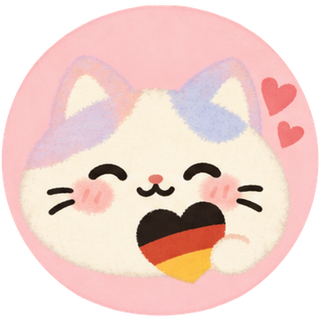

Chị ▾Mục tiêu 5 từ vựng mỗi ngày · Không áp lực, nhớ thật lâu.
Học tối thiểu 5 từ vựng qua Active Recall. Đạt mốc để xem mèo câu cá trúng thưởng!
Bạn đã hoàn thành phiên học hôm nay. Bé mèo đã sẵn sàng nhận thưởng!
Bạn đang học dở bài Bluey – Pizza-Schwestern.
Bạn đã hoàn thành trọn vẹn tất cả câu thoại của tập phim! Bạn đã bắt tai cực tốt và lồng tiếng như một diễn viên thực thụ!
Mỗi ngày hoàn thành 5 từ vựng, bé mèo sẽ câu được một chú cá quý kèm từ vựng tiếng Đức!
Thêm thẻ mới, chỉnh sửa thẻ tự tạo, nhập file CSV/JSON hàng loạt hoặc sao lưu thẻ về máy tính.
supabase_schema.sql để tạo bảng tự động.